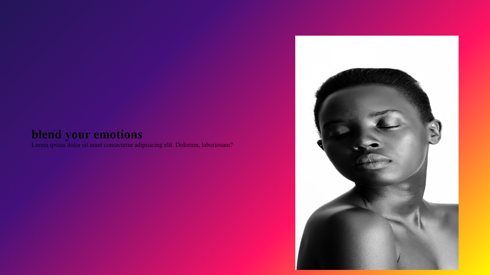
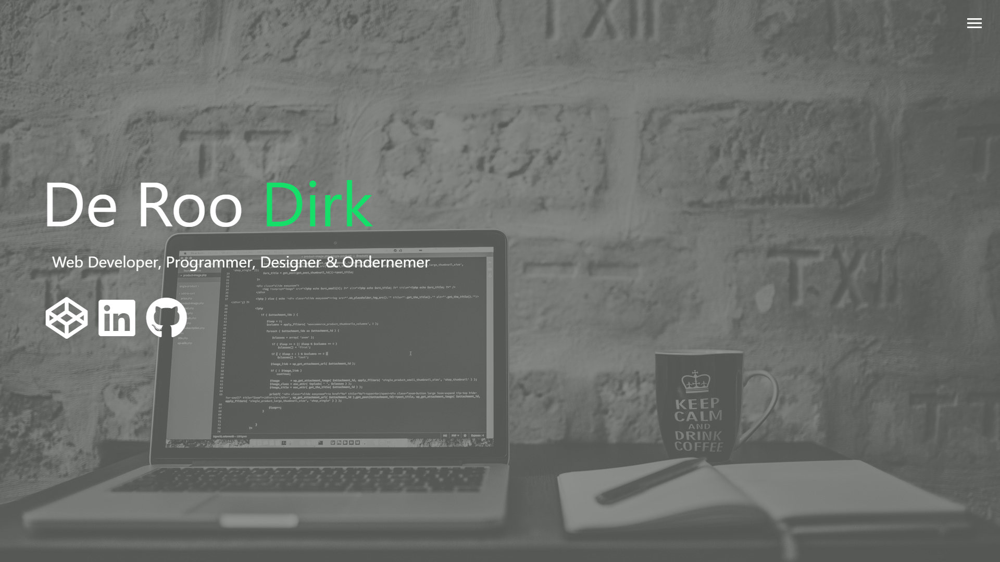
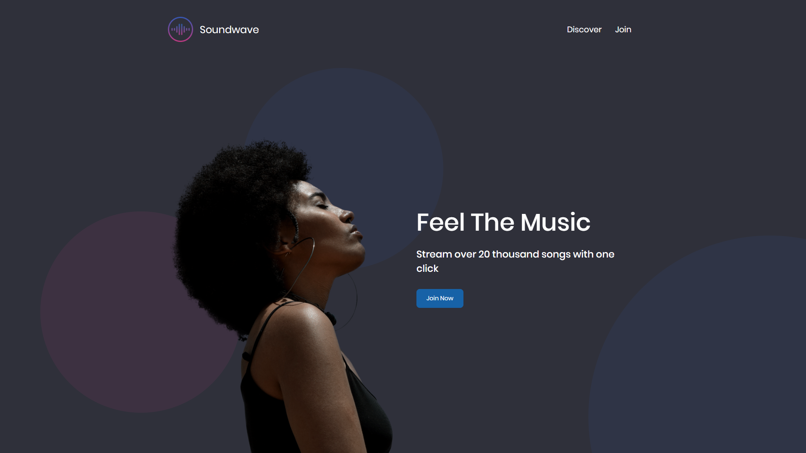
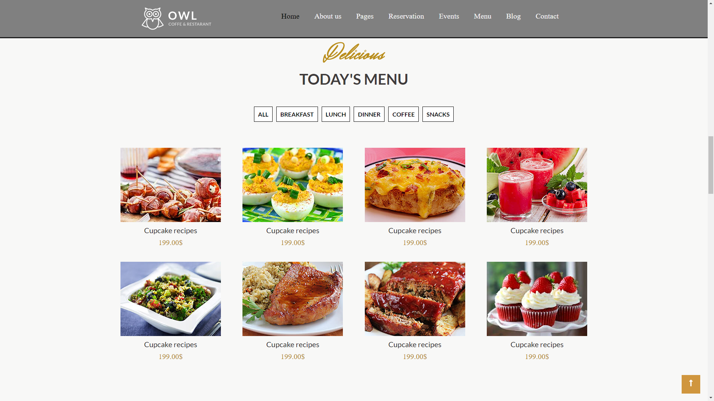
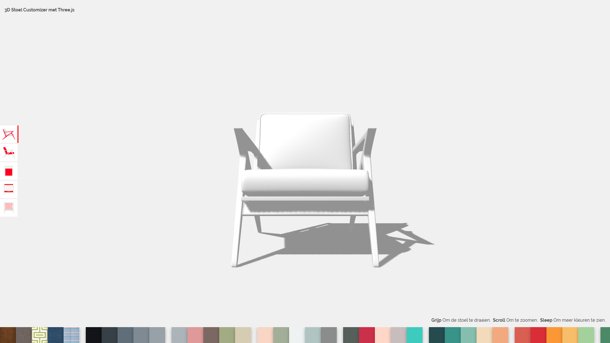
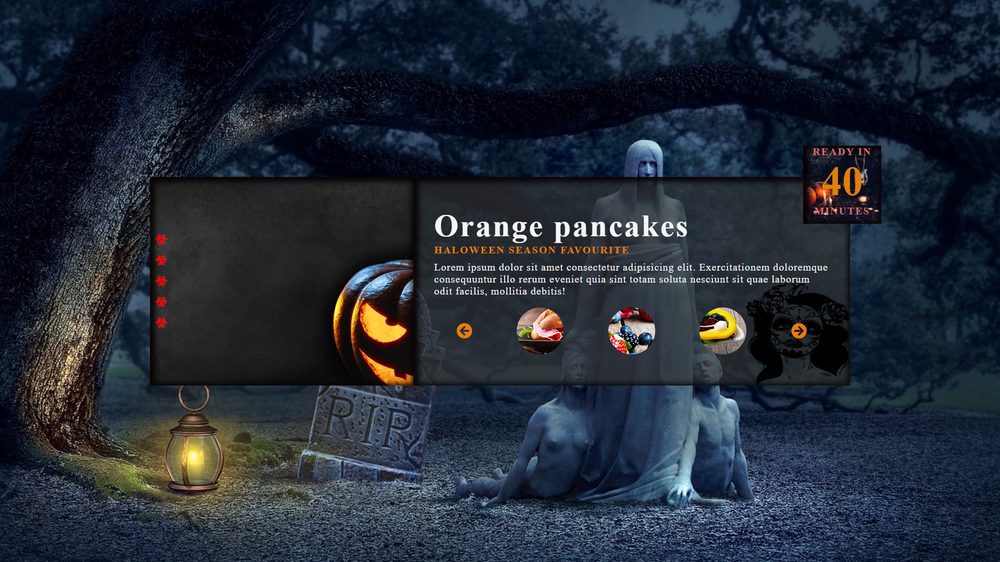
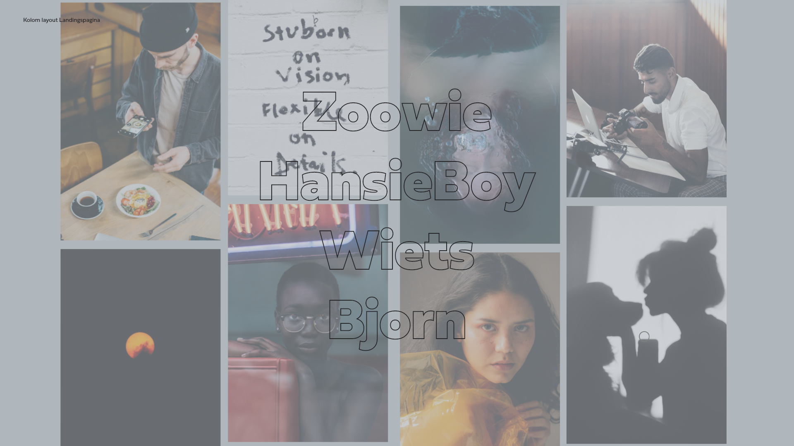
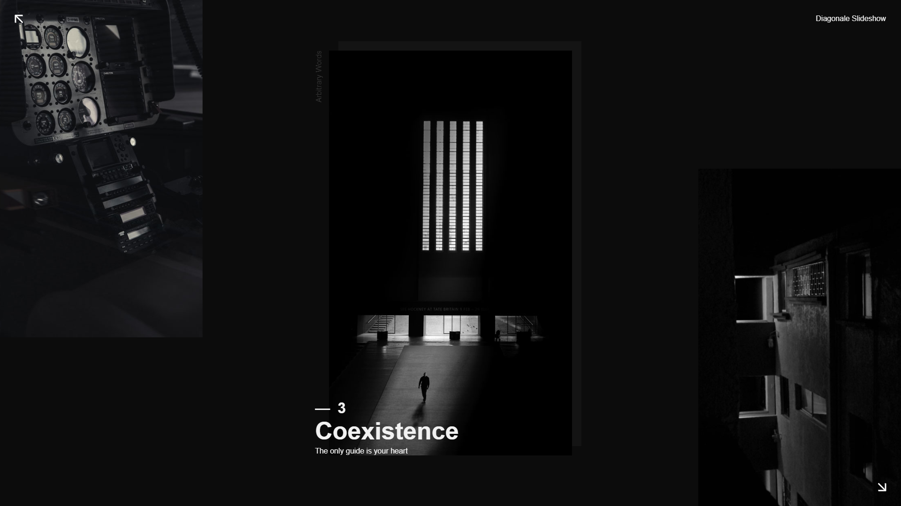
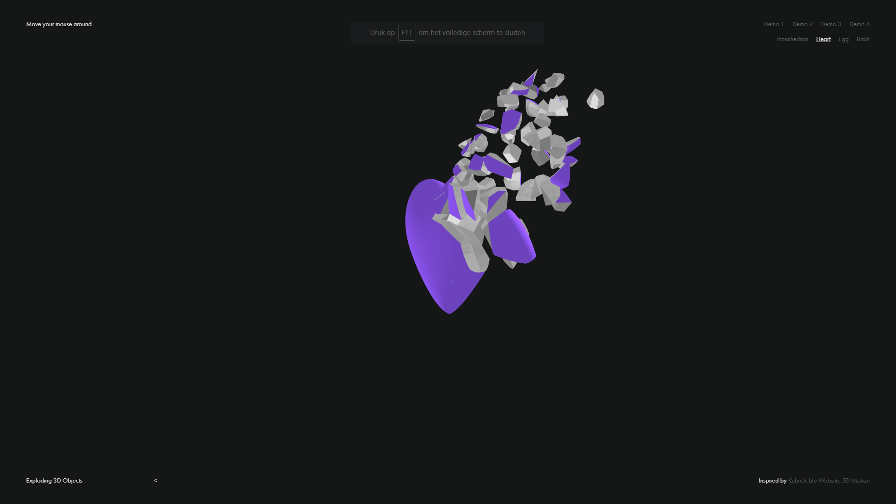

Home
Over mij
Mijn projecten
Contacteer mij
Mijn
Projecten
Bekijk hier enkele van mijn projecten...

Project foto transitie
Github See My Code

Project Portfolio
Github See My Code

Project Figma/design
Github See My Code

Project restaurant WIP
Github See My Code
Project KinéM
Github See My Code

3D Stoel Cutomizer met 3Three.js.
Github See My Code

Project horror pancake (flex/mobile)
Code Github See My Code

Kolom layout(tweenMax ,charming,enz)
Github See My Code

Diagonale slider ,pics gaan open met extra text
Github See My Code

Javascript Project
Github See My Code
Some App Project.
Github See My Code
Got a project for me ?
Github See My Code